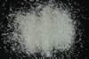

|
|
(For further information on spectroscopy, see:
http://speclab.cr.usgs.gov)
TITLE: Diopside HS15 Pyroxene DESCRIPT
DOCUMENTATION_FORMAT: MINERAL
SAMPLE_ID: HS15
MINERAL_TYPE: Inosilicate
MINERAL: Diopside (Pyroxene group)
FORMULA: CaMgSi2O6
FORMULA_HTML: CaMgSi2O6
COLLECTION_LOCALITY: Edwards, NY
ORIGINAL_DONOR: Hunt and Salisbury Collection
CURRENT_SAMPLE_LOCATION: USGS Denver Spectroscopy Laboratory
ULTIMATE_SAMPLE_LOCATION: USGS Denver Spectroscopy Laboratory
SAMPLE_DESCRIPTION:
Forms series with Hedenbergite and with Johannsenite.
"This is not a pure magnesian diopside. An absorption bands at 1.05 indicates the presence of ferrous iron in the crystal structure. A small amount of water in fluid inclusions is indicated by the weak H2O absorptions."
Hunt, G.R., J.W. Salisbury, 1970, Visible and near-infrared spectra of minerals and rocks: I. Silicate minerals. Modern Geology, v. 1, p. 283-300.
IMAGE_OF_SAMPLE:

END_SAMPLE_DESCRIPTION.
XRD_ANALYSIS:
40 kV - 30 mA, 6.5-9.5 keV
File: diop15.out, -.mdi
References: Borg and Smith (1969); Huebner's reference patterns
Found: Clinopyroxene, trace mica (three basal reflections)
Comment: Superbly crystallized pyroxene. Excellent position and intensity match
with synthetic diopside of composition CaMgSi2O6. The high 2-theta side of the
-221 reflection has a shoulder that is absent in the pattern of the synthetic
material and the pattern calculated by Borg and Smith; however, a similar shoulder
is observed in clinopyroxene HS119.3B and in a pattern of diopside from France.
The pyroxene is diopside and the mica is probably phlogopite.
END_XRD_ANALYSIS.
COMPOSITIONAL_ANALYSIS_TYPE: None # XRF, EM(WDS), ICP(Trace), WChem
COMPOSITION_TRACE: None
COMPOSITION_DISCUSSION:
END_COMPOSITION_DISCUSSION.
MICROSCOPIC_EXAMINATION:
avg. grain size = 295 µm
Pure sample. Large grains 10% surface coated with 10µm diopside grains. Large diopside grains have 8-10 vol% fluid inclusions, inclined extinction, high relief, biaxial (+), two cleavages at nearly right angles, all consistent with diopside. G. Swayze.
END_MICROSCOPIC_EXAMINATION.
SPECTROSCOPIC_DISCUSSION:
END_SPECTROSCOPIC_DISCUSSION.
SPECTRAL_PURITY: 1c2d3b4b # 1= 0.2-3, 2= 1.5-6, 3= 6-25, 4= 20-150 microns
| LIB_SPECTRA_HED: | where | Wave Range | Av_Rs_Pwr | Comment |
|---|---|---|---|---|
| LIB_SPECTRA: | splib04a r 1429 | 0.2-3.0µm | 200 | g.s.= 295 µm |
| LIB_SPECTRA: | splib05a r 2404 | 0.2-3.0µm | 200 | g.s.= |
| LIB_SPECTRA: | splib06a r 6924 | g.s.= | ||
| LIB_SPECTRA: | splib06a r 6935 | g.s.= |
{kind=link}